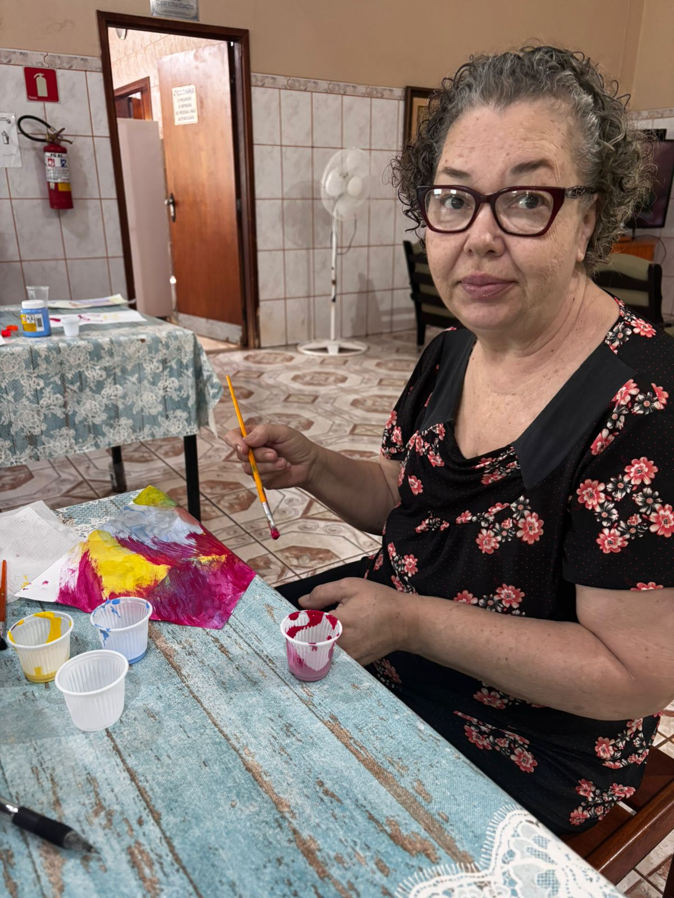
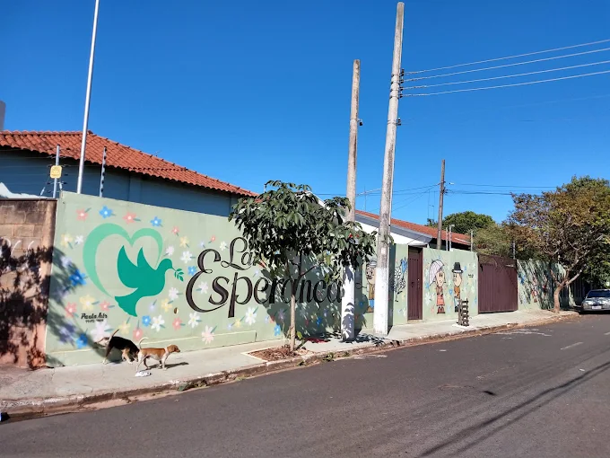
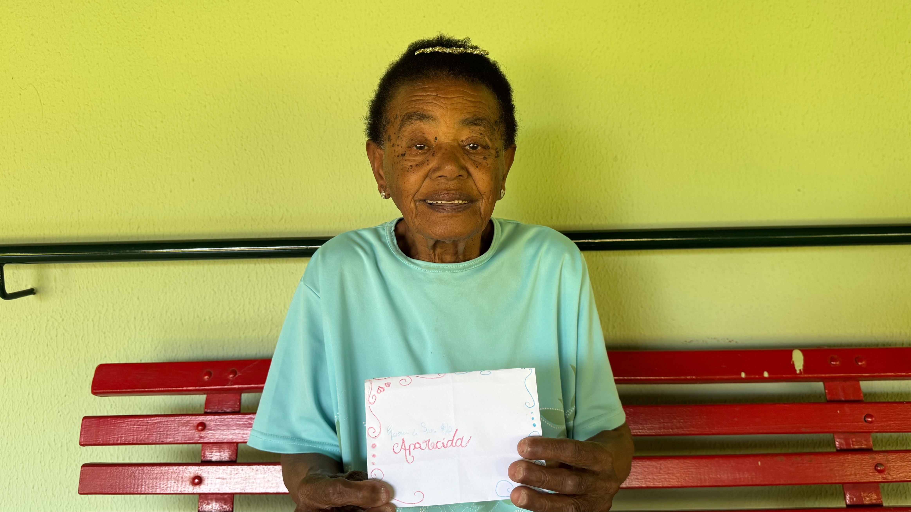

Projeto Universos
Teatro e dança
No teatro, conversamos sobre a história dessa arte, e as crianças de 9 e 10 anos apresentaram minipeças.
Na dança, a dinâmica se inverteu: as crianças ensinaram hip hop ao grupo.
Arte, escuta e encontro
Somos estudantes do Ensino Médio Técnico em Multimídia do SENAC São José do Rio Preto. No Contarém, crianças e idosos compartilham saberes por meio da arte: o grupo ensina e também aprende, em uma troca que aproxima gerações e abre espaço para expressar sentimentos.

Cultura, escuta e encontro
O Contarém aproxima crianças do Projeto Universos e idosos do Lar e Esperança por meio de uma troca de saberes: compartilhamos o que sabemos e aprendemos com cada encontro.
Quanto mais conversamos com os idosos, mais percebemos a profundidade do que têm a dizer e sentir. A arte abre caminhos para expressar essas vivências e para que crianças e idosos conheçam outros olhares sobre a vida.
A arte dá mais cores à expressão e cria espaço para que gerações compartilhem o que sabem e sentem.
Quatro oficinas, uma troca
No Projeto Universos e no Lar e Esperança, cada oficina abre espaço para ensinar, aprender e se expressar.
Projeto Universos
No teatro, conversamos sobre a história dessa arte, e as crianças de 9 e 10 anos apresentaram minipeças.
Na dança, a dinâmica se inverteu: as crianças ensinaram hip hop ao grupo.
Lar e Esperança
Na pintura, conversamos sobre a vida dos idosos, que desenharam o que sentiam.
Em Era uma vez, os idosos escreveram cartas sobre suas vidas, histórias, vivências e ideias.
Registros e produções
Imagens e histórias do Contarém no Projeto Universos e no Lar e Esperança.


Cada registro revela diferentes formas de compartilhar saberes e expressar vivências por meio da arte.
Nosso jeito de estar junto
Registro do projeto
Dúvidas frequentes
O Contarém aproxima crianças do Projeto Universos e idosos do Lar e Esperança por meio da arte e da troca de saberes.
O Contarém é um projeto do Ensino Médio Técnico em Multimídia do SENAC São José do Rio Preto. Por meio da arte, crianças e idosos compartilham conhecimentos e aprendem uns com os outros.
Realizamos teatro e dança com crianças do Projeto Universos, além de pintura e escrita de cartas com idosos do Lar e Esperança.
A arte oferece linguagens além da conversa. Cores, gestos, imagens e palavras podem ajudar a organizar e compartilhar ideias, sempre a partir da vontade de cada participante.
Nas oficinas, crianças e idosos compartilham o que sabem e aprendem uns com os outros. A arte também oferece caminhos para expressar ideias, sentimentos e vivências.
Vamos conversar
Para conversar com o grupo, acesse nosso perfil no Instagram:
@contarem2026